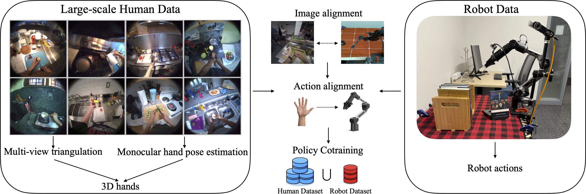

Human video datasets used for cotraining robot manipulation policies largely consist of curated demonstrations where motions are orchestrated to resemble robot behavior and 3D hand poses are captured with specialized hardware. A more plentiful source of data is everyday Internet video, but it is an open question what factors enable transfer from such videos to robots. We investigate this using a new dataset of 532 human videos with 28 hours of high-quality triangulated hand labels and natural motions. We find that hand pose quality affects transfer, but even with accurate hands, the inherent motion gap hinders transfer unless the vision and policy networks specialize to each embodiment. Our cotraining recipe yields consistent improvements, with an absolute success rate gain of 29.7% in the low-robot-data regime across six manipulation tasks.

We build TriHands, a dataset of everyday cooking videos with accurate 3D hands produced by a multi-view triangulation pipeline.
Below we visualize 2D projections of our triangulated hand keypoints from multiple synchronized camera views.
Drag the slider to scrub through time. Exo views: drag to pan, scroll to zoom, double-click to reset.
Side-by-side comparison of zero-shot policy rollouts on unseen test environments.
Human Cotraining (ours) consistently outperforms the Robot Only baseline.
Training Environments (10 scenes)
Test Environments (unseen objects & backgrounds)
We thank the EgoExo4D team for providing the original dataset and calibration data. This work was supported in part by [funding sources to be added].
@inproceedings{anonymous2026cotraining,
title = {What Matters When Cotraining Robot Manipulation Policies on Everyday Human Videos?},
author = {Anonymous},
booktitle = {TBD},
year = {2026}
}